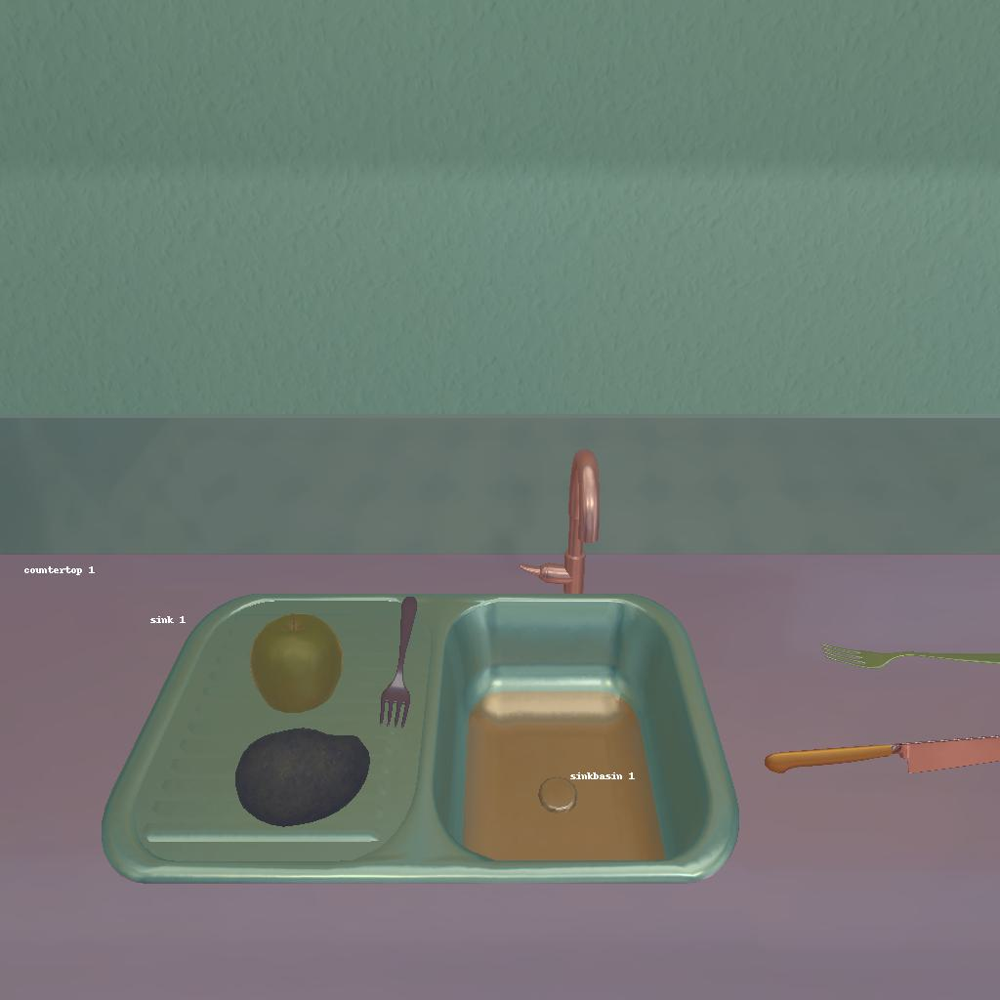
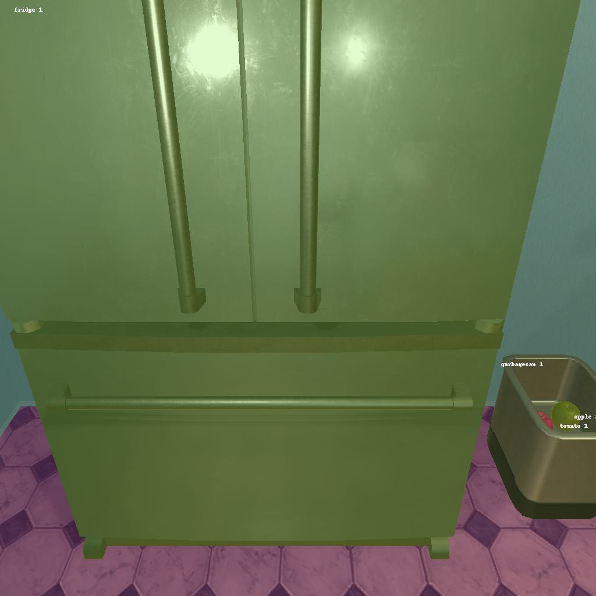

---------------------------------------------------------task: 20---------------------------------------------------------
--------------------------------------------------------------------------------------------------------------------------------------------------------------------
--------------------------------------------------------------------------------------------------------------------------------------------------------------------
Step:--------------------------------------------------------------------------2-------------------------------------------------------------------------------
----------------------------------------
VLM Prompt:
Image1:
Image2:
Image3:
**Instruction**
1. Analyze the provided image to identify all visible household objects, focusing on those relevant to the task description "put a hot apple in garbagecan."
2. Use the analysis of the image and the task hint "The agent must find an object of the desired type, pick it up, go to a microwave, heat the object with the microwave, then find the correct location to place it, and put it down there. The agent does not need to use the microwave button or open the microwave to heat the object, and the agent just needs to do action that is "heat the object with the microwave"." to answer the question: what is the most reasonable action in the choices for the task description "put a hot apple in garbagecan"?
4. Decide and write the answer using the template: The answer is: (i): , where i is the real number. If there is no desired object in the image, search every place based on **Initial Observation** to find the object. And if no one is exactly correct, choose a similar answer.
**Initial Observation**
You are in the middle of a room. Looking quickly around you, you can see cabinet (1-18), countertop (1-4), sink (1), drawer (1-7), sinkbasin (1), coffeemachine (1), microwave (1), garbagecan (1), stoveburner (1-4), toaster (1), fridge (1)
**Answer Choices**
(1): go to cabinet 1
(2): go to cabinet 2
(3): go to countertop 1
(4): go to cabinet 3
(5): go to cabinet 4
(6): go to cabinet 5
(7): go to sink 1
(8): go to cabinet 6
(9): go to drawer 1
(10): go to drawer 2
(11): go to sinkbasin 1
(12): go to cabinet 7
(13): go to cabinet 8
(14): go to coffeemachine 1
(15): go to cabinet 9
(16): go to countertop 2
(17): go to cabinet 10
(18): go to drawer 3
(19): go to drawer 4
(20): go to drawer 5
(21): go to cabinet 11
(22): go to cabinet 12
(23): go to cabinet 13
(24): go to cabinet 14
(25): go to stoveburner 1
(26): go to countertop 3
(27): go to stoveburner 2
(28): go to stoveburner 3
(29): go to stoveburner 4
(30): go to drawer 6
(31): go to cabinet 15
(32): go to cabinet 16
(33): go to cabinet 17
(34): go to cabinet 18
(35): go to toaster 1
(36): go to drawer 7
(37): go to countertop 4
(38): go to fridge 1
(39): take apple 2 from garbagecan 1
(40): take tomato 1 from garbagecan 1
(41): examine garbagecan 1
**Answer**
Let's think step by step by following the instructions.
----------------------------------------
----------------------------------------
Original Response:
First, we need to identify the relevant objects for the task "put a hot apple in garbagecan":
- There is an apple visible in Image2 on countertop 1 labeled "apple 1."
- The microwave is also visible in Image2, labeled "microwave 1."
- The garbagecan is visible in Image3 labeled "garbagecan 1."
Following the task hint, the agent must pick up the apple, heat it with the microwave, and then put it in the garbagecan.
The most logical action from the choices, considering the positioning of the apple, microwave, and garbagecan, would be to:
- Pick up "apple 1" from countertop 1.
- Heat the apple with "microwave 1."
- Put it in "garbagecan 1."
However, the answer choices do not include the option to heat the apple with the microwave or put the apple in the garbagecan. The only related action from the choices provided is to take the apple from the garbagecan.
Since the instruction says to follow the Initial Observation if no desired object is in the image, we will look for the apple in the locations mentioned. We know from Image2 that the apple is on countertop 1. Therefore, the most reasonable action in the choices for the task description is to go to countertop 1 and take the apple.
The answer is: (3): go to countertop 1.
----------------------------------------
----------------------------------------
>>> Refine Original VLM Response and Get Pure Action: go to countertop 1
----------------------------------------
-----------------------------------------------------------------
Running time: 23.039812564849854 seconds
Total Money: 12.540190000000003
-----------------------------------------------------------------
-----------------------------------------------------------------
Text Observation:You arrive at loc 2. On the countertop 1, you see a peppershaker 1.
-----------------------------------------------------------------
UNSUCCEED